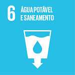

O Objetivo de Desenvolvimento Sustentável 6 (ODS 6) da ONU visa garantir a disponibilidade e a gestão sustentável da água e saneamento para todos até 2030. Esse objetivo é essencial para o desenvolvimento sustentável e abrange dimensões ambientais, econômicas e sociais. A água potável e o saneamento adequados são fundamentais para a erradicação da pobreza, o crescimento econômico e a sustentabilidade ambiental.
Principais Metas do ODS 6
Acesso Universal à Água Potável (Meta 6.1)
Garantir que todos tenham acesso a água potável, segura e acessível.
Saneamento e Higiene para Todos (Meta 6.2)
Alcançar o acesso a saneamento e higiene adequados, acabando com a defecação a céu aberto, especialmente para mulheres, meninas e grupos vulneráveis.
Qualidade da Água (Meta 6.3)
Melhorar a qualidade da água reduzindo a poluição, eliminando despejos e minimizando a liberação de produtos químicos e materiais perigosos. Aumentar a reciclagem e reutilização segura das águas residuais.
Eficiência no Uso da Água (Meta 6.4)
Aumentar a eficiência do uso da água em todos os setores, assegurando retiradas sustentáveis e abastecimento adequado de água doce para enfrentar a escassez.
Gestão Integrada dos Recursos Hídricos (Meta 6.5)
Implementar a gestão integrada dos recursos hídricos em todos os níveis, incluindo a cooperação transfronteiriça.
Proteção dos Ecossistemas Relacionados à Água (Meta 6.6)
Proteger e restaurar ecossistemas aquáticos como montanhas, florestas, zonas úmidas, rios, aquíferos e lagos.
Cooperação Internacional e Desenvolvimento de Capacidades (Meta 6.a)
Ampliar a cooperação internacional e o apoio ao desenvolvimento de capacidades em países em desenvolvimento para atividades relacionadas à água e saneamento.
Participação das Comunidades Locais (Meta 6.b)
Apoiar e fortalecer a participação das comunidades locais na gestão da água e saneamento.
Estatísticas e Dados
Aqui estão alguns dados importantes sobre a situação atual da água e saneamento no mundo:
- Mais de 2 bilhões de pessoas vivem sem acesso a água potável gerenciada de forma segura.
- Mais de 4 bilhões de pessoas carecem de saneamento gerenciado de forma segura.
- 40% da população mundial é afetada pela escassez de água.
- 85% das pessoas vivem em áreas urbanas sem acesso a saneamento seguro.
Iniciativas e Projetos
Existem várias iniciativas e projetos em andamento para alcançar o ODS 6:
- Projeto Água para Todos: Focado em fornecer acesso a água potável em comunidades rurais.
- Programa de Saneamento Urbano: Trabalha para melhorar as infraestruturas de saneamento em áreas urbanas.
- Iniciativa de Recuperação de Rios: Projetos que visam limpar e revitalizar rios poluídos.
- Parceria Público-Privada para Água: Colaborações para desenvolver tecnologias de tratamento de água e melhorar a gestão dos recursos hídricos.
Curiosidade
Curiosidade
Fontes e Referências
Para saber mais sobre o ODS 6, visite as seguintes fontes: